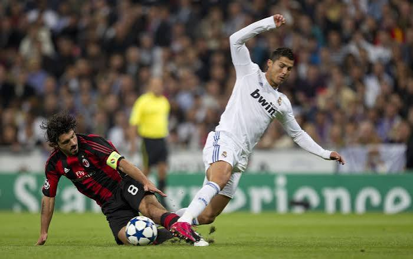

Üdvözöllek a focis oldalon!
A labdarúgás a világ egyik legnépszerűbb sportja. Emberek milliói követik a mérkőzéseket és szurkolnak kedvenc csapatuknak.

Ezen az oldalon megismerhetsz néhány híres játékost, valamint népszerű futballklubokat is.
Kattints ide a játékosokhoz!⚽ A futball története
A modern labdarúgás Angliában alakult ki a 19. században. Azóta az egész világon elterjedt.
🏆 Nagy versenyek
A legfontosabb tornák közé tartozik a világbajnokság, a Bajnokok Ligája és az Európa-bajnokság.
🌍 Futball mindenhol
Európában, Dél-Amerikában és sok más kontinensen is rengetegen szeretik és játsszák a futballt.